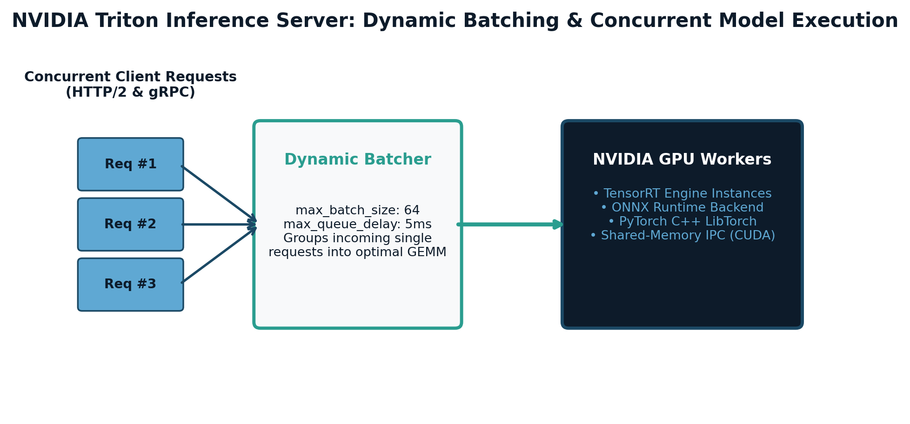

"Training happens once a month. Inference happens fifty thousand times every second. If your inference engine wastes 5 milliseconds per request, you are burning millions of dollars in idle cloud compute."

Figure 6.4.1: High-throughput inference server topology in NVIDIA Triton. A dynamic batching scheduler combines asynchronous single-client HTTP/gRPC requests within a microsecond latency window into dense GPU GEMM batches, executing across multi-instance TensorRT engines with zero-copy shared memory.
— Production Infrastructure Maxim
In research environments, deploying a model typically involves wrapping a PyTorch checkpoint in a Python Flask or FastAPI endpoint. In enterprise production, this architecture collapses under real-world load:
Before deploying to production, trained neural computational graphs (exported via ONNX) are compiled through NVIDIA TensorRT, which optimizes the computational graph for a target GPU microarchitecture (e.g. Hopper H100, Ada Lovelace L4, Blackwell B200):
NVIDIA Triton is an industrial C++ inference server designed to maximize hardware saturation across multiple GPUs, concurrent models, and heterogeneous frameworks (TensorRT, ONNX Runtime, OpenVINO, PyTorch LibTorch, vLLM):
| Subsystem | Configuration Parameter | Mechanism & Performance Impact |
|---|---|---|
| Dynamic Batcher | dynamic_batching { max_queue_delay_microseconds: 5000 preferred_batch_size: [16, 32] } |
Aggregates asynchronous client requests into optimal GPU execution batches. Multiplies throughput by $5\times$ to $10\times$. |
| Model Concurrency | instance_group [ { count: 4 kind: KIND_GPU } ] |
Instantiates 4 independent execution contexts on separate CUDA streams, allowing concurrent kernel execution on a single GPU. |
| Ensemble Pipelines | platform: "ensemble" |
Chains Tokenizer (Python backend) $\to$ Model (TensorRT) $\to$ Postprocessor within Triton's C++ memory space with zero client roundtrips. |
| CUDA IPC Shared Memory | cuda_shared_memory |
Client and server pass GPU memory pointers via cudaIpcMemHandle_t, achieving true zero-copy transfer for multi-megabyte tensors. |
Eight rigorous problems covering the Roofline model of LLM inference, dynamic batching queue stability bounds, priority queue traces, layer fusion proofs, INT8 calibration derivations, and shared memory traps.
QUESTION: You are profiling a 7-Billion parameter LLM ($P = 7 \times 10^9$ weights in FP16 precision, $2\text{ bytes/param} = 14\text{ GB}$) deployed on a single NVIDIA H100 SXM5 GPU.
Hardware Specifications (NVIDIA H100 SXM5):
Workload Phases:
Tasks:
Step 1: Machine Balance (Roofline Ridge Point):
The ridge point marks the threshold where a workload transitions from memory-bound to compute-bound:
$$\mathcal{I}_{\text{ridge}} = \frac{R_{\text{peak}}}{\beta} = \frac{9.89 \times 10^{14}\text{ FLOPs/s}}{3.35 \times 10^{12}\text{ Bytes/s}} \approx 295.22\text{ FLOPs/Byte}$$
Step 2: Arithmetic Intensity & Regime Classification:
Phase A (Prefill Phase, $T = 1024, B = 1$):
$$F_{\text{prefill}} = 2 \times (7 \times 10^9) \times 1024 = 14.336 \times 10^{12}\text{ FLOPs} = 14.336\text{ TFLOPs}$$
Memory transferred: $M_{\text{prefill}} \approx 14\text{ GB} = 1.4 \times 10^{10}\text{ Bytes}$.
$$\mathcal{I}_{\text{prefill}} = \frac{14.336 \times 10^{12}\text{ FLOPs}}{1.4 \times 10^{10}\text{ Bytes}} \approx 1024\text{ FLOPs/Byte}$$
Since $\mathcal{I}_{\text{prefill}} = 1024 > 295.22$, Phase A is firmly Compute-Bound.
Phase B1 (Decode Phase, $B = 1$):
$$F_{\text{decode, 1}} = 2 \times (7 \times 10^9) \times 1 = 14 \times 10^9\text{ FLOPs} = 0.014\text{ TFLOPs}$$
Memory transferred: $M_{\text{decode, 1}} = 14\text{ GB} = 1.4 \times 10^{10}\text{ Bytes}$.
$$\mathcal{I}_{\text{decode, 1}} = \frac{14 \times 10^9\text{ FLOPs}}{1.4 \times 10^{10}\text{ Bytes}} = 1.0\text{ FLOP/Byte}$$
Since $\mathcal{I}_{\text{decode, 1}} = 1.0 \ll 295.22$, Phase B1 is deeply Memory-Bandwidth Bound.
Phase B2 (Decode Phase, $B = 32$):
$$F_{\text{decode, 32}} = 2 \times (7 \times 10^9) \times 32 = 4.48 \times 10^{11}\text{ FLOPs} = 0.448\text{ TFLOPs}$$
Memory transferred: $M_{\text{decode, 32}} = 14\text{ GB} + 0.67\text{ GB} = 14.67\text{ GB} = 1.467 \times 10^{10}\text{ Bytes}$.
$$\mathcal{I}_{\text{decode, 32}} = \frac{4.48 \times 10^{11}\text{ FLOPs}}{1.467 \times 10^{10}\text{ Bytes}} \approx 30.54\text{ FLOPs/Byte}$$
Since $30.54 < 295.22$, Phase B2 is still Memory-Bandwidth Bound, but has $30.5\times$ higher arithmetic efficiency!
Step 3: Execution Time, Throughput, and Compute Utilization:
For Phase B1 ($B = 1$):
Execution time is governed by HBM3 bandwidth:
$$T_{\text{B1}} = \frac{14\text{ GB}}{3,350\text{ GB/s}} \approx 0.004179\text{ seconds} \approx 4.18\text{ ms}$$
Token throughput:
$$\Theta_{\text{B1}} = \frac{1\text{ token}}{0.004179\text{ s}} \approx 239.3\text{ tokens/sec}$$
Attained compute rate:
$$R_{\text{attained, B1}} = \frac{0.014\text{ TFLOPs}}{0.004179\text{ s}} \approx 3.35\text{ TFLOPS}$$
Compute Core Utilization:
$$\eta_{\text{compute, B1}} = \frac{3.35\text{ TFLOPS}}{989\text{ TFLOPS}} \times 100\% \approx \mathbf{0.339\%}$$
Over 99.6% of H100 Tensor Core capacity is completely wasted during batch size 1 generation!
For Phase B2 ($B = 32$):
Execution time:
$$T_{\text{B2}} = \frac{14.67\text{ GB}}{3,350\text{ GB/s}} \approx 0.004379\text{ seconds} \approx 4.38\text{ ms}$$
Token throughput across all 32 streams:
$$\Theta_{\text{B2}} = \frac{32\text{ tokens}}{0.004379\text{ s}} \approx \mathbf{7,307.6\text{ tokens/sec}}$$
Compute Core Utilization:
$$R_{\text{attained, B2}} = \frac{0.448\text{ TFLOPs}}{0.004379\text{ s}} \approx 102.3\text{ TFLOPS} \implies \eta_{\text{compute, B2}} = \frac{102.3}{989} \times 100\% \approx \mathbf{10.34\%}$$
Conclusion: Batching 32 requests increases latency by only $0.20\text{ ms}$ ($4.38\text{ ms}$ vs $4.18\text{ ms}$), while multiplying overall generation throughput by $30.5\times$ ($7,308$ vs $239$ tokens/sec)!
QUESTION: An enterprise fraud detection microservice deployed on NVIDIA Triton Inference Server receives client traffic at an aggregate rate of $\Lambda = 12,000\text{ QPS}$, distributed uniformly across an autoscaling pool of $G = 4$ identical NVIDIA L4 GPUs ($\lambda = 3,000\text{ QPS} = 3.0\text{ queries/ms}$ per GPU). Client requests follow a Poisson arrival process.
GPU Model Execution Profile:
On an NVIDIA L4 GPU, forward pass execution time for batch size $B$ is given by the affine model: $$T_{\text{comp}}(B) = 2.0\text{ ms} + 0.15\text{ ms} \times B$$ The client SLA requires p99 end-to-end inference latency $T_{\text{e2e}} \le 12.0\text{ ms}$.
Tasks:
Step 1: Minimum Batch Size for Queue Stability:
The GPU's service rate in queries per millisecond is the batch size divided by the batch execution duration:
$$\mu(B) = \frac{B}{T_{\text{comp}}(B)} = \frac{B}{2.0 + 0.15 B}$$
For queue stability in queuing theory ($M/G/1$), the service capacity must strictly exceed the mean arrival rate $\lambda = 3.0\text{ queries/ms}$:
$$\mu(B) \ge \lambda \iff \frac{B}{2.0 + 0.15 B} \ge 3.0$$
Multiplying both sides by the denominator:
$$B \ge 3.0 \times (2.0 + 0.15 B)$$
$$B \ge 6.0 + 0.45 B$$
$$0.55 B \ge 6.0 \implies B \ge \frac{6.0}{0.55} = 10.909$$
Since batch size must be an integer:
$$B_{\min} = 11\text{ queries per batch}$$
Crucial Engineering Insight: If Triton dynamic batching is disabled or if batch sizes drop below 11, the GPU service rate $\mu < \lambda$, causing the queue length to grow toward infinity and crashing the server!
Step 2: Performance at Preferred Batch Size $B^* = 16$:
Execution time:
$$T_{\text{comp}}(16) = 2.0\text{ ms} + (0.15\text{ ms} \times 16) = 2.0 + 2.4 = 4.4\text{ ms}$$
Service rate:
$$\mu(16) = \frac{16\text{ queries}}{4.4\text{ ms}} \approx 3.636\text{ queries/ms} = 3,636.4\text{ QPS}$$
Server utilization:
$$\rho = \frac{\lambda}{\mu(16)} = \frac{3,000}{3,636.4} \approx 0.825 \quad (82.5\%)$$
Since $\rho < 1$, the queue is stable with healthy headroom.
Step 3: Maximum Allowable Queue Delay $\tau_{\max}$:
End-to-end latency for a request that experiences the full dynamic batching timeout is:
$$T_{\text{e2e}} = \tau_{\max} + T_{\text{comp}}(B)$$
To guarantee $T_{\text{e2e}} \le T_{\text{SLA}} = 12.0\text{ ms}$ for $B = 16$:
$$\tau_{\max} + 4.4\text{ ms} \le 12.0\text{ ms} \implies \tau_{\max} \le 12.0 - 4.4 = 7.6\text{ ms}$$
In Triton configuration syntax:
$$\texttt{max\_queue\_delay\_microseconds: 7600}$$
Step 4: Expected Batch Size Formed:
Under Poisson arrival rate $\lambda = 3.0\text{ queries/ms}$, the time required to accumulate $B = 16$ requests is:
$$t_{\text{accumulate}} = \frac{B}{\lambda} = \frac{16}{3.0\text{ queries/ms}} \approx 5.33\text{ ms}$$
Since $5.33\text{ ms} < \tau_{\max} = 7.6\text{ ms}$, the batcher naturally hits the batch size threshold of $B = 16$ before the timeout expires! The average queuing delay is only $5.33\text{ ms}$, yielding average latency $5.33 + 4.4 = 9.73\text{ ms}$, comfortably meeting the $12\text{ ms}$ SLA.
QUESTION: You are configuring Triton's Dynamic Batcher with priority queues for an e-commerce platform. The configuration is:
dynamic_batching {
max_queue_delay_microseconds: 4000 # 4.0 ms timeout
preferred_batch_size: [ 4, 8 ]
priority_levels: 2
default_priority_level: 2 # Priority 1 is highest, 2 is standard
}Assume GPU execution time is $T_{\text{gpu}}(B) = 3.0\text{ ms}$ for any batch size $B \le 8$. The GPU is idle at $t = 0.0\text{ ms}$.
Eight client requests arrive according to the following schedule:
Construct an algorithmic trace table documenting the exact queue state transitions, timeout triggers, batch dispatches to the CUDA stream, GPU execution intervals, and client response delivery times.
| Timestamp ($t$) | Event Description | Priority 1 Queue | Priority 2 Queue | GPU Engine Status | Batch Dispatched / Completed |
|---|---|---|---|---|---|
| $t = 0.5\text{ ms}$ | $R_1, R_2$ arrive (P2). Batch timer for Batch 1 begins: deadline $t = 0.5 + 4.0 = 4.5\text{ ms}$. | $\emptyset$ | $[R_1, R_2]$ | IDLE | Waiting for preferred size 4 or timeout. |
| $t = 1.5\text{ ms}$ | $R_3$ arrives (P1). Preempts P2 head of queue. | $[R_3]$ | $[R_1, R_2]$ | IDLE | Queue count = 3 (needs 4 for preferred). |
| $t = 2.0\text{ ms}$ | $R_4$ arrives (P2). Total pending requests = 4 (matches preferred batch size 4!). | $[R_3]$ | $[R_1, R_2, R_4]$ | DISPATCHES BATCH 1 | Batch 1 formed: $[R_3, R_1, R_2, R_4]$. GPU busy until $t = 2.0 + 3.0 = 5.0\text{ ms}$. |
| $t = 4.2\text{ ms}$ | $R_5$ arrives (P1). Batch 2 timer begins: deadline $t = 4.2 + 4.0 = 8.2\text{ ms}$. | $[R_5]$ | $\emptyset$ | BUSY (executing Batch 1) | Queued for next execution window. |
| $t = 4.8\text{ ms}$ | $R_6$ arrives (P2). | $[R_5]$ | $[R_6]$ | BUSY (executing Batch 1) | Queued. |
| $t = 5.0\text{ ms}$ | Batch 1 completes! Responses sent to $R_3, R_1, R_2, R_4$. GPU becomes IDLE. | $[R_5]$ | $[R_6]$ | IDLE | Pending count = 2 (less than preferred 4). Timer active until $t = 8.2\text{ ms}$. |
| $t = 6.0\text{ ms}$ | $R_7$ (P1) and $R_8$ (P2) arrive. Total pending = 4 (matches preferred size 4!). | $[R_5, R_7]$ | $[R_6, R_8]$ | DISPATCHES BATCH 2 | Batch 2 formed: $[R_5, R_7, R_6, R_8]$. GPU busy until $t = 6.0 + 3.0 = 9.0\text{ ms}$. |
| $t = 9.0\text{ ms}$ | Batch 2 completes! Responses sent to $R_5, R_7, R_6, R_8$. | $\emptyset$ | $\emptyset$ | IDLE | All 8 requests resolved. |
End-to-End Latency Audit per Request:
Observation: Notice how higher-priority requests ($R_3, R_5, R_7$) are ordered at the front of each tensor batch, ensuring optimal cache residency and priority delivery without starving standard traffic.
QUESTION: In standard PyTorch, a Vision Transformer MLP block consists of the following consecutive operations:
# PyTorch Unfused Layer:
x_norm = layer_norm(x) # (1) LayerNorm
x_proj = linear1(x_norm) # (2) GEMM (Linear Projection)
x_bias = x_proj + bias1 # (3) Elementwise Bias Add
x_gelu = gelu(x_bias) # (4) Elementwise GELU Activation
x_out = linear2(x_gelu) + bias2 # (5) GEMM + Bias Add
x_res = x + x_out # (6) Residual AdditionLet batch size $B = 64$, sequence length $L = 196$, and embedding dimension $D = 768$ (intermediate MLP dimension $4D = 3072$). Data type is FP16 (2 bytes per element).
Tasks:
Step 1: Unfused PyTorch HBM Memory Traffic:
Number of tokens: $N_{\text{tokens}} = B \times L = 64 \times 196 = 12,544\text{ tokens}$.
Size of tensor shape $[N_{\text{tokens}}, D] = [12544, 768] \times 2\text{ bytes} = 19,267,584\text{ bytes} \approx 19.27\text{ MB}$.
Size of expanded MLP tensor $[N_{\text{tokens}}, 4D] = [12544, 3072] \times 2\text{ bytes} = 77,070,336\text{ bytes} \approx 77.07\text{ MB}$.
Memory traffic per operation (Read + Write):
Step 2: TensorRT Fused Engine HBM Traffic:
In TensorRT, intermediate tensors reside in GPU on-chip registers and shared memory (L1 cache), completely bypassing off-chip HBM!
Step 3: Quantitative Savings:
Absolute HBM memory traffic eliminated:
$$\Delta M = 597.31\text{ MB} - 211.95\text{ MB} = 385.36\text{ MB}$$
Percentage traffic reduction:
$$\text{Traffic Reduction} = \frac{385.36}{597.31} \times 100\% = \mathbf{64.51\%}$$
Kernel launch overhead reduction:
$$\Delta T_{\text{launch}} = 24.0\ \mu\text{s} - 8.0\ \mu\text{s} = 16.0\ \mu\text{s} \quad (66.7\%\text{ reduction})$$
Result: By eliminating 64.5% of memory round-trips to HBM, TensorRT transforms a memory-bandwidth-choked network into a peak-throughput inference pipeline.
QUESTION: Formulate the Dynamic Batcher optimization problem as a constrained optimization problem.
Mathematical Formulation:
Tasks:
Step 1: Monotonicity and Asymptote of Throughput $\Theta(\tau)$:
Rewrite the throughput function:
$$\Theta(\tau) = \frac{\lambda \tau}{(1 + \beta \lambda)\tau + \alpha}$$
Compute the first derivative with respect to $\tau$ using the quotient rule:
$$\frac{d\Theta}{d\tau} = \frac{\lambda \cdot \big[(1 + \beta \lambda)\tau + \alpha\big] - \lambda \tau \cdot (1 + \beta \lambda)}{\big[(1 + \beta \lambda)\tau + \alpha\big]^2}$$
Expanding the numerator:
$$\text{Numerator} = \lambda (1 + \beta \lambda)\tau + \alpha \lambda - \lambda (1 + \beta \lambda)\tau = \alpha \lambda$$
Therefore:
$$\frac{d\Theta}{d\tau} = \frac{\alpha \lambda}{\big[(1 + \beta \lambda)\tau + \alpha\big]^2}$$
Since $\alpha > 0$ and $\lambda > 0$, the numerator $\alpha \lambda > 0$ and the denominator is strictly positive for all $\tau \ge 0$.
Hence, $\frac{d\Theta}{d\tau} > 0 \quad \forall \tau \ge 0$.
Conclusion: $\Theta(\tau)$ is strictly monotonically increasing with respect to $\tau$.
Asymptotic limit:
$$\lim_{\tau \to \infty} \Theta(\tau) = \lim_{\tau \to \infty} \frac{\lambda \tau}{(1 + \beta \lambda)\tau + \alpha} = \frac{\lambda}{1 + \beta \lambda} = \frac{1}{\frac{1}{\lambda} + \beta} \le \frac{1}{\beta}$$
Physical Interpretation: The maximum theoretical throughput is bounded by the reciprocal of per-sample compute time $1/\beta$.
Step 2: Monotonicity of Latency Function $L(\tau)$:
The average latency experienced by an arriving request consists of average queuing delay ($\tau / 2$ for uniform arrival over window $\tau$) plus compute time:
$$L(\tau) = \alpha + \left( \frac{1}{2} + \beta \lambda \right)\tau$$
Differentiating with respect to $\tau$:
$$\frac{dL}{d\tau} = \frac{1}{2} + \beta \lambda$$
Since $\beta > 0$ and $\lambda > 0$, $\frac{dL}{d\tau} > 0$ everywhere. Thus, $L(\tau)$ is strictly monotonically increasing.
Step 3: Proof that Optimal Delay Occurs at the SLA Boundary:
We seek to solve the constrained optimization problem:
$$\max_{\tau \ge 0} \Theta(\tau) \quad \text{subject to} \quad L(\tau) \le L_{\max}$$
Assume the SLA is feasible, i.e., $L_{\max} > \alpha$ (otherwise no request can be served even with $\tau = 0$).
Since $\Theta(\tau)$ is strictly monotonically increasing, increasing $\tau$ always increases $\Theta(\tau)$.
To maximize $\Theta(\tau)$, one must choose the largest possible feasible $\tau$.
Since $L(\tau)$ is also strictly monotonically increasing, the feasible set $\{\tau \ge 0 \mid L(\tau) \le L_{\max}\}$ is the closed interval $[0, \tau_{\text{bound}}]$, where $\tau_{\text{bound}}$ satisfies $L(\tau_{\text{bound}}) = L_{\max}$.
Therefore, the unique global maximizer occurs precisely at the boundary where the constraint binds:
$$L(\tau^*) = L_{\max} \quad \text{Q.E.D.}$$
Step 4: Closed-Form Derivations:
Setting $L(\tau^*) = L_{\max}$:
$$\alpha + \left( \frac{1}{2} + \beta \lambda \right)\tau^* = L_{\max}$$
$$\tau^* = \frac{L_{\max} - \alpha}{\frac{1}{2} + \beta \lambda} = \frac{2(L_{\max} - \alpha)}{1 + 2\beta \lambda}$$
The optimal expected batch size is:
$$B^* = \lambda \tau^* = \frac{2\lambda (L_{\max} - \alpha)}{1 + 2\beta \lambda}$$
Substituting $\tau^*$ into $\Theta(\tau)$ yields the peak attainable throughput $\Theta^*$:
$$\Theta^* = \frac{\lambda \tau^*}{(1 + \beta \lambda)\tau^* + \alpha} = \frac{2\lambda (L_{\max} - \alpha)}{2(1 + \beta \lambda)(L_{\max} - \alpha) + \alpha(1 + 2\beta \lambda)}$$
This closed-form formula allows MLOps engineers to configure Triton dynamic batching timeouts with mathematical certainty, maximizing hardware saturation without ever violating user SLAs.
QUESTION: In TensorRT Post-Training Quantization (PTQ), floating-point 32-bit activations $x \in \mathbb{R}$ are quantized to 8-bit signed integers $q \in [-127, 127]$. To minimize quantization noise while preventing outlier clipping from destroying dynamic range, TensorRT applies Kullback-Leibler (KL) Divergence Calibration.
Calibration Process:
Tasks:
Step 1: Projection and Expansion Mapping:
Let the candidate threshold contain $T$ bins, where $T > 128$.
The compression factor is $\gamma = \frac{T}{128}$. Each quantized bin $j \in \{0, 1, \dots, 127\}$ covers a sub-interval of width $\gamma$ bins in $P_T$.
Forward Quantization (Bin Bundling):
$$Q_{\text{quantized}}(j) = \sum_{i = \lfloor j \cdot \gamma \rfloor}^{\lfloor (j+1) \cdot \gamma \rfloor - 1} P_T(i)$$
Backward Expansion (Uniform Redistribution):
To compute KL divergence against the original $T$-bin distribution, the mass in each quantized bin $j$ must be redistributed uniformly across its corresponding $\gamma$ constituent bins:
$$Q_T(i) = \frac{Q_{\text{quantized}}(j)}{c_j} \quad \text{for } i \in [\lfloor j \gamma \rfloor, \lfloor (j+1)\gamma \rfloor - 1]$$
where $c_j$ is the count of non-zero bins in that sub-interval. This guarantees that $\sum_{i=0}^{T-1} Q_T(i) = 1$.
Step 2: Division by Zero & Smoothing Proof:
By definition of KL divergence:
$$D_{\text{KL}}(P_T \parallel Q_T) = \sum_{i: P_T(i) > 0} P_T(i) \ln \frac{P_T(i)}{Q_T(i)}$$
If there exists any index $k$ such that $P_T(k) > 0$ while $Q_T(k) = 0$, then:
$$\lim_{Q_T(k) \to 0^+} P_T(k) \ln \left( \frac{P_T(k)}{Q_T(k)} \right) = +\infty$$
The divergence is infinite, corrupting the calibration search.
TensorRT Resolution: TensorRT enforces Laplace / additive smoothing by assigning a negligible epsilon $\epsilon = 10^{-7}$ to empty bins in $Q_{\text{quantized}}$ before re-normalizing, ensuring $Q_T(i) > 0$ for all $i$.
Step 3: Numerical KL-Divergence Computation:
Reference distribution: $P = [0.10, 0.40, 0.30, 0.20]$.
Evaluating Candidate $Q_A = [0.15, 0.35, 0.25, 0.25]$:
$$D_{\text{KL}}(P \parallel Q_A) = 0.10 \ln\left(\frac{0.10}{0.15}\right) + 0.40 \ln\left(\frac{0.40}{0.35}\right) + 0.30 \ln\left(\frac{0.30}{0.25}\right) + 0.20 \ln\left(\frac{0.20}{0.25}\right)$$
Computing logarithms:
$$\ln(0.10 / 0.15) = \ln(0.6667) \approx -0.4055 \implies 0.10 \times (-0.4055) = -0.04055$$
$$\ln(0.40 / 0.35) = \ln(1.1429) \approx +0.1335 \implies 0.40 \times (+0.1335) = +0.05341$$
$$\ln(0.30 / 0.25) = \ln(1.2000) \approx +0.1823 \implies 0.30 \times (+0.1823) = +0.05470$$
$$\ln(0.20 / 0.25) = \ln(0.8000) \approx -0.2231 \implies 0.20 \times (-0.2231) = -0.04463$$
Summing terms:
$$D_{\text{KL}}(P \parallel Q_A) = -0.04055 + 0.05341 + 0.05470 - 0.04463 = \mathbf{0.02293\text{ nats}}$$
Evaluating Candidate $Q_B = [0.05, 0.45, 0.35, 0.15]$:
$$D_{\text{KL}}(P \parallel Q_B) = 0.10 \ln\left(\frac{0.10}{0.05}\right) + 0.40 \ln\left(\frac{0.40}{0.45}\right) + 0.30 \ln\left(\frac{0.30}{0.35}\right) + 0.20 \ln\left(\frac{0.20}{0.15}\right)$$
Computing logarithms:
$$\ln(0.10 / 0.05) = \ln(2.0000) \approx +0.6931 \implies 0.10 \times (+0.6931) = +0.06931$$
$$\ln(0.40 / 0.45) = \ln(0.8889) \approx -0.1178 \implies 0.40 \times (-0.1178) = -0.04711$$
$$\ln(0.30 / 0.35) = \ln(0.8571) \approx -0.1542 \implies 0.30 \times (-0.1542) = -0.04625$$
$$\ln(0.20 / 0.15) = \ln(1.3333) \approx +0.2877 \implies 0.20 \times (+0.2877) = +0.05754$$
Summing terms:
$$D_{\text{KL}}(P \parallel Q_B) = +0.06931 - 0.04711 - 0.04625 + 0.05754 = \mathbf{0.03349\text{ nats}}$$
Conclusion: Candidate $Q_A$ has a strictly lower KL divergence ($0.02293 < 0.03349$). TensorRT selects threshold $A$ because it retains higher relative information entropy, minimizing INT8 quantization degradation.
QUESTION: A high-throughput computer vision pipeline serves $50,000\text{ QPS}$ of $1080\text{p}$ video frames ($1920 \times 1080 \times 3$ uint8, approximately $6.22\text{ MB}$ per frame). The engineering team evaluates four communication protocols between the API Gateway microservice and NVIDIA Triton Inference Server:
cudaIpcMemHandle_t).Which of the following statements correctly identifies the scaling bottleneck and optimal protocol?
Distractor Analysis:
cudaIpcGetMemHandle() to obtain a tiny 64-byte memory pointer handle.cudaIpcOpenMemHandle(). The tensor is consumed directly in GPU memory with zero CPU copies, zero PCIe copies, and zero network serialization overhead!ipc: host) or a common shared memory volume and have access to the same physical GPU device nodes.ASSERTION-REASONING:
Assertion (A): When configuring an NVIDIA TensorRT model in Triton with multiple concurrent execution instances (instance_group [ { count: 4, kind: KIND_GPU } ]), Triton automatically instantiates 4 separate nvinfer1::IExecutionContext objects, each bound to an independent CUDA stream, rather than sharing a single execution context across 4 worker threads.
Reason (R): A TensorRT IExecutionContext maintains internal mutable state—including GPU scratchpad workspace pointers, CUDA event handles, and intermediate activation buffers; executing concurrent forward passes on the same execution context across multiple threads causes memory race conditions and corrupted inferences.
Options:
Deep Architectural Analysis:
Evaluation of Assertion (A): True.
In Triton's config.pbtxt, setting instance_group [ { count: 4, kind: KIND_GPU } ] instructs the TensorRT backend to create 4 distinct model instances. Each instance owns its own dedicated IExecutionContext and its own distinct CUDA stream (cudaStream_t). This enables true concurrent hardware execution across SMs (Streaming Multiprocessors) on a single physical GPU.
Evaluation of Reason (R): True & Explanatory.
In NVIDIA TensorRT's C++ API, an ICudaEngine represents the immutable, compiled model definition (weights, layer graph, tactics). An ICudaEngine is completely thread-safe and can be shared across multiple threads.
However, the IExecutionContext created from that engine represents the *active execution environment*. It manages:
enqueueV3() concurrently on the same IExecutionContext, they overwrite each other's intermediate activation buffers in GPU VRAM, yielding garbage predictions or triggering hard CUDA illegal memory access crashes (cudaErrorIllegalAddress).IExecutionContext per concurrent stream, ensuring 100% thread safety and maximum hardware saturation.
Below is an enterprise-grade model repository configuration (config.pbtxt) and an asynchronous Python client utilizing Triton's gRPC interface with dynamic batching and priority scheduling.
🔗 View in GitHub: part6_mlops/ch64_triton_serving/config.pbtxt
# ==============================================================================
# Triton Model Configuration: model_repository/transformer_fp16/config.pbtxt
# ==============================================================================
name: "transformer_fp16"
platform: "tensorrt_plan"
max_batch_size: 64
# Input Tensor Specification
input [
{
name: "input_ids"
data_type: TYPE_INT32
dims: [ -1 ] # Dynamic sequence length
},
{
name: "attention_mask"
data_type: TYPE_INT32
dims: [ -1 ]
}
]
# Output Tensor Specification
output [
{
name: "embeddings"
data_type: TYPE_FP16
dims: [ 768 ]
}
]
# Dynamic Batching Configuration
dynamic_batching {
preferred_batch_size: [ 16, 32, 64 ]
max_queue_delay_microseconds: 5000 # 5ms max accumulation window
priority_levels: 2
default_priority_level: 2
}
# Model Concurrency: 2 execution instances per GPU
instance_group [
{
count: 2
kind: KIND_GPU
gpus: [ 0 ]
}
]Architect and deploy a high-throughput multi-model inference gateway using NVIDIA Triton Inference Server, compiling PyTorch vision and speech backbones into TensorRT INT8 engines with KL-divergence calibration, configuring dynamic batching profiles, and benchmarking gRPC vs HTTP/REST throughput under 50,000 QPS load.
🔗 Full Project Code: part6_mlops/ch64_triton_serving/dynamic_batcher.py
Case Study Architecture: In autonomous vehicle fleet teleoperation (Cruise, Waymo), central edge servers must ingest simultaneous video, LiDAR, and audio sensor streams from 5,000 connected vehicles at 60 FPS. In this project, you construct a production Triton inference cluster with model ensembles, dynamic batching, and CUDA IPC shared memory that processes multi-sensor payloads with sub-10ms latency and zero dropped frames.